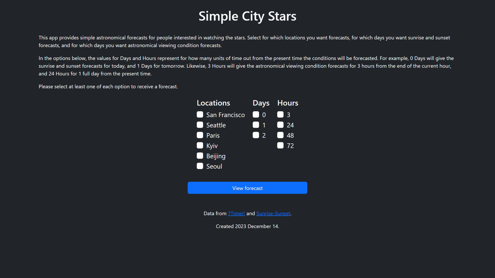

Simple City Stars
Simple City Stars provides simple and relevant information in one centralized site to help casual stargazers decide and plan when they will be able to spend some of their free time watching the stars.
It is important to have good night sky visibility for stargazing, so you can actually see the stars, but weather and visibility is highly unpredictable. There are resources available online for forecasting that show users highly detailed data for individual locations, but these sites and their data have a high learning curve for casual users.
Clear Sky Charts is an astronomer's forecast website based in Canada with decades of history that provides coverage for over 3000 observing sites across North America. Based off of Clear Sky Charts, 7Timer! is a site created in July 2005 in China that produces forecasts for the entire globe across about 1.5 million geographic points.
Simple City Stars combines the visibility forecast data provided by the 7Timer! API with sunrise and sunset data from the Sunrise-Sunset API. It can forecast visibility conditions up to three days out, and you can select which level of time-scale granularity you are looking for. It provides explanations for what the ratings on each visibility scale mean to help users understand unfamiliar metrics. It also supports comparison across multiple cities around the world, so you can plan to stargaze with your friends in different latitudes and time zones more easily.